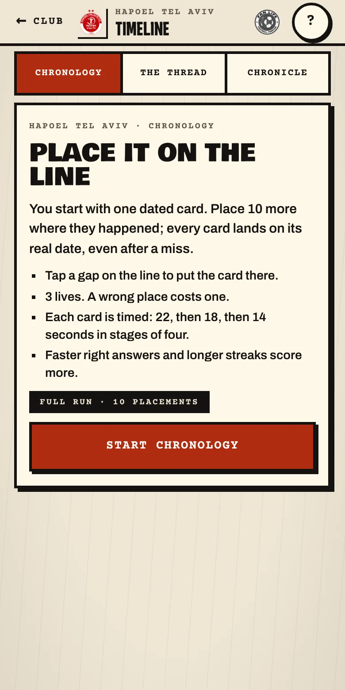
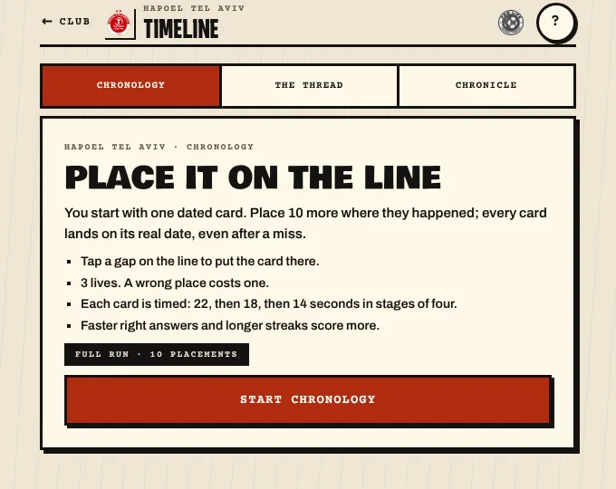

What Fan Life is
Fan Life is a multi-club game and history engine for football supporters. Each club receives its own visual identity, language, history, squads, kits, honours, stadiums, rivalries and supporter culture — and plays through the same set of games, timelines and archives. The aim is simple to say and hard to build: one codebase, one deployment, one database, many club packs.
It grew directly out of The Worker, our Hapoel Tel Aviv history game. The Worker stays an independent product; Fan Life reuses its engines, its gates and its research discipline so that each new club does not mean rebuilding a game from scratch.
How it works
Everything specific to a club — colours, fonts, patterns, squads, seasons, kits, honours — lives in a structured data pack. Adding a club means adding data, then reviewing it, not writing new game code.
The same Timeline, the same gates and the same LIFE experience render in each club's own look and voice. A supporter of one club should never feel they are inside another club's template.
For a new club, the research queue gathers evidence from public encyclopaedic sources, keeps it for human review, and only approved sources and facts move toward the playable game. Nothing is invented to fill a gap.
Where a club's data is thin, rounds are shorter and labelled as partial. We prefer a smaller true game to a larger false one.
What exists today
- Chronological Timeline — one shared engine and board playing for Hapoel Tel Aviv, HŠK Zrinjski Mostar and Olympiacos, with clearly labelled short rounds where a club's pack is still small.
- Thirteen gates and LIFE — the interactive game gates and the LIFE experience inherited from The Worker, native to Hapoel and being migrated to the shared club contract.
- Club identity manifests — small files that define each club's background, surface, text, accent, typography and patterns, used consistently across the portal, club hub and games.
- A research and review workflow — evidence retrieval from public sources with retry handling, source approval, fact approval and an audit trail.
- An admin and control room — for managing clubs, research queues, updates from the upstream game and release checks.
Fan Life is currently an integrated evaluation release: Hapoel has the native gates and LIFE, and other clubs are being brought onto the shared contract one milestone at a time. We say that plainly because the products on this site are meant to be accurate about their own state.
See it
Screens from the current evaluation build. Chronology is the first shared game: every card lands on its real date, you have three lives, and each card is timed.


Why we are building it
Every serious supporter community has the same raw material — seasons, players, shirts, derbies, songs, grounds — and almost none of it is presented as something you can play with and explore. A club-by-club game would be impossible to maintain by hand; a club-as-data engine makes the effort scale while keeping each club distinctive. The research method behind it is described in our guide to researching a football club's history, and the standards we hold it to are on our editorial standards page.
Where it goes next
Next milestones are migrating the remaining gates onto the shared club contract, completing identity manifests for every club in the registry, and moving from evaluation storage to production storage. Each step ships behind review, and each club only opens when its data is strong enough to support a good game.